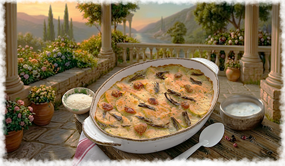

Кухня народа
Апулийский ciambotto – это рагу из овощей. В керченской адаптации главную роль играет
черноморская хамса, тушеная с большим количеством томатов, луком, чесноком и местными
травами. Это блюдо-маркер итальянского присутствия.
Тиелла - Запеканка-плов из риса, картофеля, мидий, лука, помидоров и чеснока, приготовленная
в глубокой сковороде (тиелле) в духовке. Слои укладываются последовательно: картофель, рис,
мидии, помидоры, всё посыпается сыром и сухарями, затем запекается до образования хрустящей корочки.


Паста с мидиями и томатами, приготовленными в томатном соусе с чесноком, белым вином,
петрушкой и острым перцем. Это блюдо стало символом итальянской Керчи. В 1920-1930-х годах, когда
итальянские колхозы (например, «Сакко и Ванцетти») активно развивались, паста с мидиями была
повседневной едой.
Вяленые помидоры - Помидоры, разрезанные пополам, подсоленные, высушенные на солнце, а
затем залитые оливковым маслом с чесноком, орегано и каперсами. Используются как закуска,
добавка к пасте, салатам или начинка для бутербродов.

Фокачча с розмарином - Плоский хлеб (высотой 1-2 см) из муки, воды, оливкового масла,
соли и дрожжей, посыпанный розмарином и крупной морской солью. Выпекается в духовке до
золотистой корочки.
Песто по-генуэзски - оригинальный соус из свежего базилика, оливкового масла, кедровых орехов,
чеснока, пармезана и пекорино, растертый в ступке. В Генуе вместо базилика использовали мяту или душицу.

Рыбные супы - генуэзские рыбаки в Крыму готовили супы из местной рыбы (барабулька, ставрида, хамса)
с добавлением привозных специй и оливкового масла. Эти супы стали прообразом современных крымских рыбных похлебок.
Торта паскуалина - пасхальный пирог из Лигурии со шпинатом (или свеклой), рикоттой и яйцами. В Генуе его готовили
используя брынзу иил сулугуни вместо рикотты, запеклаи в слоеном тесте с целым яйцом внутри.